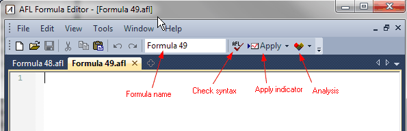
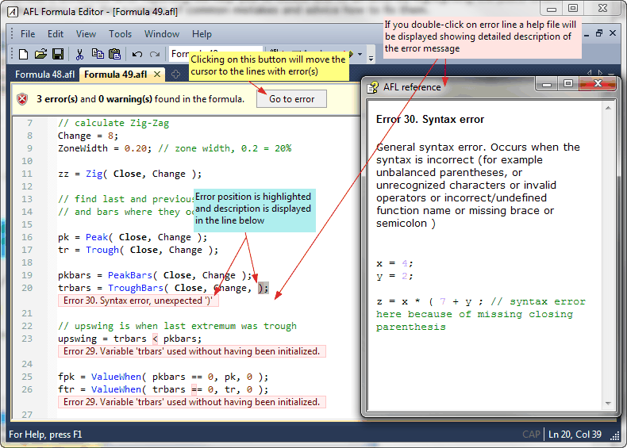
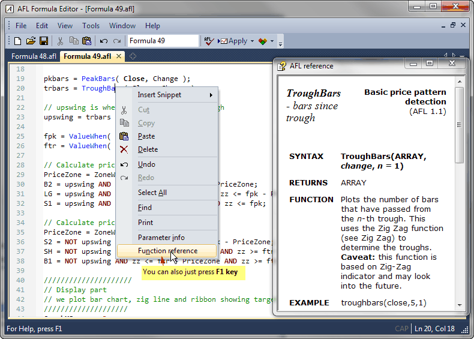
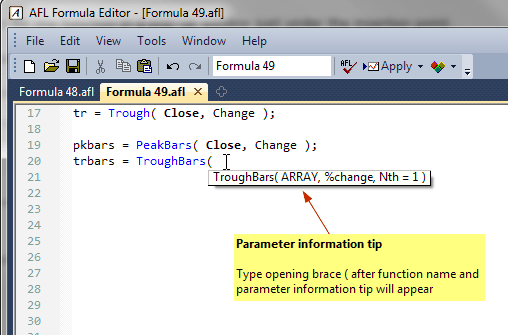
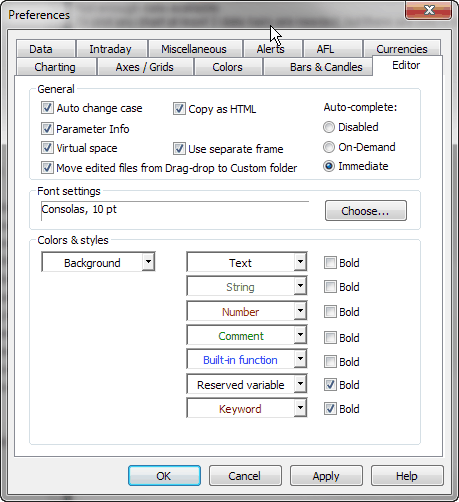
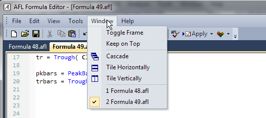
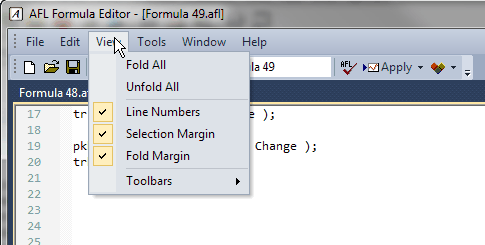

Formula Editor
The new AFL Formula Editor features:
- AI-based AFL Code Assistant (new in 7.00)
- Syntax highlighting (improved in 5.80)
- Automatic brace matching/highlighting (NEW in 5.80)
- Auto indentation (NEW in 5.80)
- Indentation markers (NEW in 5.80)
- Enhanced auto-complete in two modes (immediate (NEW in 5.80) and on-demand)
- Parameter information tooltips
- Line numbering margin and selection margin (NEW in 5.80)
- Code folding (NEW in 5.80)
- In-line Error Reporting (NEW in 5.80)
- New tabbed user interface with ability to work in both MDI and separate
floating frame mode, can be moved behind main AmiBroker screen and brought
back (Window->Toggle Frame) (NEW in 5.80) or kept on top (Window->Keep
on top)
- Rectangular block copy/paste/delete (Use mouse and hold down left Alt key
to mark rectangular block) (new in 5.80)
- Auto capitalisation (change case)
- Virtual space (new in 5.80)
- Enhanced printing (with syntax highlighting and header/footer)
- Code snippets (new in 5.80)
- Integrated Visual Debugger (NEW in 6.10)
- Bookmarks (NEW in 6.10)
- Find-in-Files (NEW in 6.10)
- Block comment/uncomment (NEW in 6.10)
- Clickable links in comments (NEW in 6.10)
These features greatly simplify formula writing and provide
instant help, so the time needed to write formulas decreases significantly.

Menu
Formula Editor menu options are described in detail in Menus:
Formula Editor chapter of the guide.
Toolbar

The Formula Editor toolbar provides the following buttons:
- New - clears the formula editor window
- Open - opens the formula file
- Save - saves the formula under current name
- Print - prints the formula
- Cut - cuts the selection and copies to the clipboard
- Copy - copies the selection to the clipboard
- Paste - pastes current clipboard content in the current cursor position
- Undo - undoes recent action (multiple-level)
- Redo - redoes recent action (multiple-level)
- Formula Name - an EDIT field that allows to modify the
formula file name, once you change the name here and press Save button,
the formula will be saved under a new name and the change will be reflected
in
editor caption
bar and in the status bar (The status bar shows the full path).
- Check syntax - checks current formula for errors
- Apply indicator - saves the formula and applies the current formula as a
chart/indicator once
- Analysis - saves the formula and selects it as the current formula
in Automatic Analysis window and repeats the most recently used analysis operation
(i.e., Scan, Exploration, Backtest, or Optimization)
Usage
Typical use of Formula Editor is as follows:
-
Open the Formula Editor
- type the formula
- type a meaningful name that describes the purpose of your code into Formula
Name field
- click Apply indicator button (if you have written indicator
code)
...
or...
click the Analysis button
to display the Automatic Analysis window (if you have written an exploration/scan
or trading system)
AFL Code Assistant
Version 7.00 brings a new AI-based code assistant that can write code for
you from a single sentence, fix errors for you, and explain code written by
others. Detailed explanation of AFL Code Assistant
functionality is given here.
Syntax highlighting
AmiBroker's AFL editor features user-definable syntax highlighting
that automatically applies user-defined colors and styles to different
language elements like functions and reserved variable names, strings,
numbers, comments, etc. This feature greatly simplifies code writing. You
can modify the coloring scheme in Preferences
window.
Enhanced error reporting
When you make an error in your formula, AmiBroker's enhanced
error reporting will help you to locate and fix it by highlighting
the place where the error occurred and displaying an extended error description with
examples of common mistakes and advice on how to fix them. In version
5.80, descriptions of errors are displayed in-line with the code.
A message bar displays the total number of errors and/or warnings. If you press
"Go to error" button, the editor will move the caret
to the relevant line containing the error; if you press it again, it will move
to the next error and so on. If you close the message bar with the "X" button,
all error messages will be cleared (hidden) from the view. You can use Edit->Clear
Error Message menu (Ctrl+E) to clear an individual error message (in
the current line).

Context help
You can quickly display the relevant AFL function reference page if you press
F1 key or choose "Function reference" from the context menu while
the caret is inside or right after a function name, as shown in the picture
below:

Automatic statement completion
The automatic completion feature (available when you press CTRL+SPACE key
combination) finishes typing your functions and reserved variables for you,
or displays a list of candidates if what you've typed has more than one possible
match. You can select the item from the list using up/down arrow keys or your
mouse. To accept the selection, press RETURN (ENTER). You can also immediately
type a space (for variables) or an opening brace (for a function), and AmiBroker will
auto-complete the currently selected word and close the list. To dismiss the list,
press the ESC key.
Parameter Information
When you are typing a function, you can display a Tool Tip containing the
complete function prototype, including parameters. The Parameter Info Tool
Tip is also displayed for nested functions.
With your insertion point next to a function, type an open parenthesis
as you normally would to enclose the parameter list.
AmiBroker displays the complete declaration for the function
in a pop-up window just under the insertion point.
Typing the closing parenthesis dismisses the parameter list.
You can also dismiss the list if you press an arrow up/down key,
click with the mouse, or press RETURN.

Editor configuration
The settings of the AFL editor can be changed using Tools->Preferences,
Editor page:

- Auto change case - controls whether the editor automatically changes the case
of reserved keywords (for example, if a user typed valuewhen, it changes
it to ValueWhen)
- Parameter info - controls whether parameter info tips are displayed
- Virtual space - controls whether it is possible to place the caret freely
at any place after the end of a line
- Move edited files from drag-drop to custom folder - normally, formulas created
by the drag-drop mechanism are located in the hidden drag-drop folder; if you then
want to edit them, you can do so in place, so they remain in the drag-drop (hidden)
folder, or you may choose to move them automatically to the 'custom' folder.
This switch enables the automatic move to the custom folder
- Copy as HTML - enables copying in HTML format so AFL code is copied with
colors; without it, it will be copied as plain text without formatting
- Use separate frame - If turned on, it displays the AFL Editor in a completely
separate frame that behaves like a separate application; if it is turned off,
the AFL editor is displayed as an MDI tab within the main AmiBroker frame (along
with charts, analysis windows, web, account windows, and so on). By default,
it is turned on
- Auto-complete: In "On-demand" mode, the auto-complete list shows up only when
you press Ctrl+SPACE; in "Immediate" mode, the auto-complete
list pops up automatically as soon as you type the first character (letter) of
the identifier.
Window control

The AFL Editor window, as a separate frame, can be brought to the top or to the back
as any other application window using the Windows Taskbar. In addition to that,
there
is a Window->Toggle Frame menu (and Ctrl+` shortcut (`
is the tilde key just above the TAB key on most keyboards)
that allows to quickly toggle between the AmiBroker main frame and the AFL editor
frame.
The user may also turn on the Window->Keep On Top feature
that keeps the editor window on top of the AmiBroker main frame.
Margins

The Line Numbers margin, Selection margin, and
Fold margin can be switched on/off using the View menu.
In this menu, there are also options to fold/unfold all code.
Code snippets
A code snippet is a small piece of AFL code. It can be inserted by:
- right-clicking in the AFL editor window and choosing the "Insert Snippet" menu option,
or
- dragging a snippet from Code Snippets window, or
- typing a keyboard trigger (such as @for ) in the editor

For more information about code snippets, see Tutorial: Using Code Snippets
Bookmarks
A bookmark is a marker that allows you to quickly jump to a marked line within the
formula.
To set/remove the bookmark, use Edit->Bookmark->Insert /Remove menu
option or the Ctrl+F2 key. When you set the bookmark, a light blue marker
will be shown in the left-hand margin. Now, with a couple of bookmarks set, you
can quickly navigate (jump) between them using the F2 key (goes
to the next bookmark), or the Shift+F2 key (goes to the previous bookmark).
You can clear all bookmarks using Edit->Bookmark->Clear All. Please
note that bookmarks are saved along with debug information (breakpoints/watches)
in a separate file with a .dbg extension.
Find in Files
Find in Files functionality is available from the Edit->Find in Files menu
and allows you to search all files in selected folders for specified
text. The search results are presented in the Output window (the Window->Output menu)
like this:
Filepath\Filename.afl(line_number): Line contents
Now, if you double-click on that output line, AmiBroker would automatically
open the given file in the new editor tab.
Block comment/uncomment
The AFL editor now provides a tool to automatically comment out blocks of
selected lines. The tool adds a // (double slash) comment to every line within
the selected area. To use this tool, select some lines using the mouse or the cursor +
SHIFT key, then use the Edit->Line Comment option. All lines within
the selected range will be commented out with // (double slash). To uncomment,
select the range again and choose the Edit->Line Comment option once again.
Clickable links in comments
The AFL Editor now supports clickable JavaDoc/Doxygen-style links in doc comments.
To use links in comments, you have to put an @link command followed by the path to
a file or URL inside a JavaDoc/Doxygen-style comment:
- multiline comment that
begins with /** like this:
/**
@link readme.html
@link http://www.amibroker.com
*/
(note double asterisk after initial slash)
- single-line comment that begins
with triple slash
/// @link readme.html
/// @link c:\program files\amibroker\readme.html
/// @link http://www.amibroker.com
Now, when you hover the mouse over an @link command, you will see an underline
that indicates it is clickable. It reacts to a double-click (not a single click).
When you double-click it, the linked document will open.
An @link command can open web pages, local files (both relative and absolute
paths are supported) with a Windows-registered program to open the given file type.
So if you use:
/// @link something.doc
then MS Word would be used.
/// @link test.xls
would open test.xls in Excel.
Relative paths refer to the AmiBroker working directory.
HTML files are opened with the default browser; TXT files are usually opened with Notepad
(or whatever application you use). If a file does not exist, then you will get
an error message.